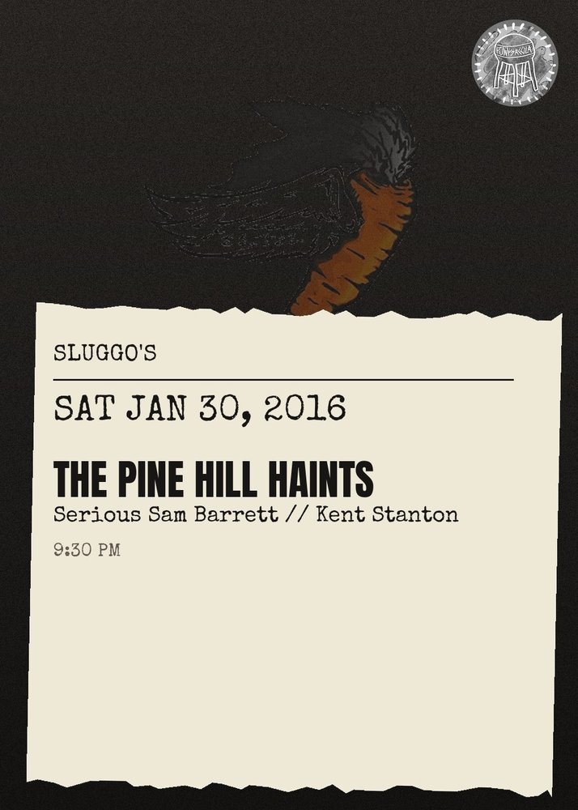

Pine Hill Haints, Serious Sam Barrett, Kent Stanton
The Pine Hill Haints perform music they consider to be \u201cdead\u201d in the modern world, hence their self-proclaimed \u201cGhost Music.\u201d Some examples of the genres they perform include (but are not limited to) gospel, rockabilly, rock and roll, celtic music, blues music, andbluegrass. While their catalog of songs comprises mainly original material, the band has also been known to cover traditional gospel (Where The Soul Of Man Never Dies, Where The Roses Never Fade), cowboy (I Ride An Old Paint, Back In The Saddle Again), and folk (Goodnight Irene, Oh! Suzanna\/Camptown Races) songs.\n\nIn addition to their live instruments, the band also utilizes a number of traditional American folk music instruments (such as a fiddle, harmonica, tenor banjo, mandolin, saw, and accordion) on their recordings. Occasionally, members of the Haints will swap instruments or abandon his or her primary instrument altogether, instead performing on one of the aforementioned instruments for a song or two. The band has several former members, and depending on how many happen to be present at a performance, surprise guest performers may accompany the Haints onstage. Such impromptu reunion performances are not completely unexpected at their shows.\n\nhttps:\/\/serioussambarrett.bandcamp.com\/\n\nhttps:\/\/companyofghosts.bandcamp.com\/